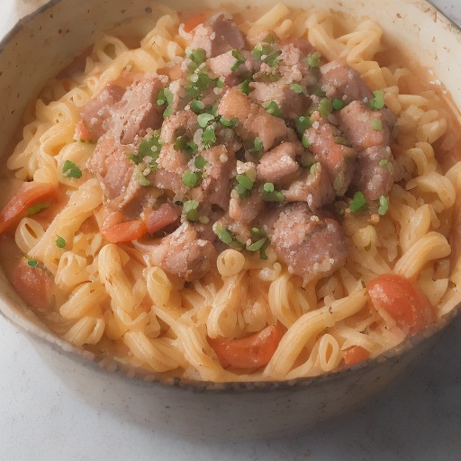

パスタ
ローストビーフ × 特製オニオンソースの「悪魔的甘辛」ソースパスタ

とろけるローストビーフと、甘辛のオニオンソースが絶妙なハーモニー！パスタに絡めたら、まるで悪魔の饗宴が味わえるよ！
💡 こんな時・こんな人におすすめ！
特別な日に、特別なひとときを演出したい時
📋 必要な材料（ポストイット風）
材料リスト 1
- ローストビーフ200g
- オニオン2個
- トマト1個
材料リスト 2
- 玉ねぎ1個
- パスタ300g
- 醤油大さじ2
材料リスト 3
- 砂糖大さじ2
- みりん大さじ1
- 酒大さじ1
材料リスト 4
- オリーブオイル大さじ2
🍳 作り方ステップ
1
1. ローストビーフは1cm角にカット。
2
2. オニオンは薄切りにして、玉ねぎは薄切りにする。
3
3. トマトは薄切りにする。
4
4. フライパンにオリーブオイルを熱し、ローストビーフを炒める。
5
5. オニオン、玉ねぎ、トマトを加えて、炒め合わせる。
6
6. 砂糖、醤油、みりん、酒を加えて、とろみをつける。
7
7. パスタを茹でる。
8
8. パスタを煮汁で絡め、皿に盛り付ける。
9
9. ローストビーフとソースを絡めて、最後に仕上げる。